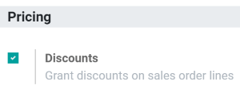
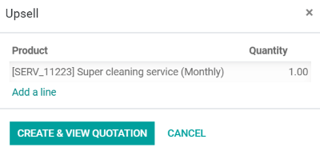
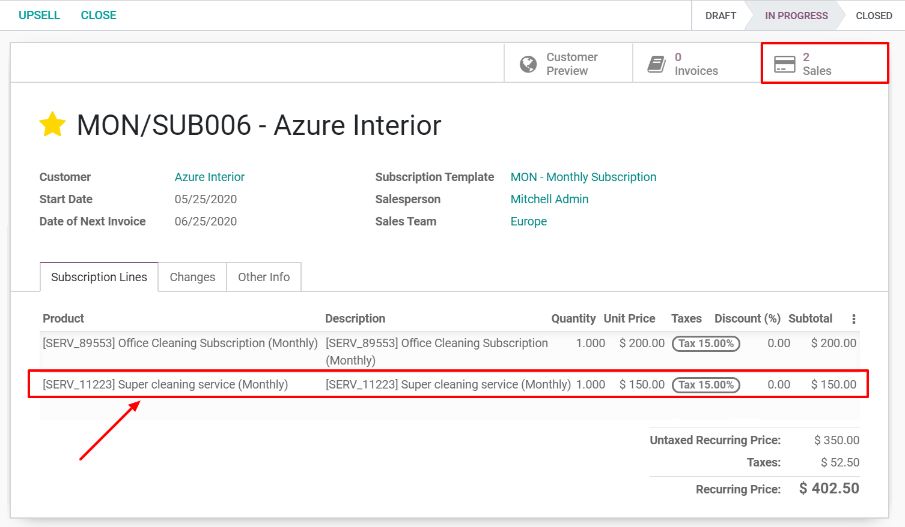

Realice una venta adicional de una suscripción¶
Las suscripciones son recurrentes y se prolongan indefinidamente. Con el paso del tiempo, puede que nuestros clientes quieran modificarlas. Entonces debemos ser capaces de adaptar los precios o cambiar las cantidades de los productos para adaptarnos a sus necesidades. Pueden pasar dos situaciones:
Clientes fieles: Este tipo de clientes ya confían en su marca. Por lo tanto, están seguros de lo que usted ofrece ya que siguen pagando por sus productos y servicios. Por lo tanto, es más fácil venderles algo adicional que a un nuevo cliente.
Nuevos clientes: Para este tipo de clientes, hay que presentar algo nuevo, algo atractivo. ¿Descuentos? Todas las suscripciones terminan después de un tiempo determinado. Ofrecer este tipo de ofertas a los nuevos clientes refuerza su relación y aumenta su retención.
Configuración¶
Como se explicó anteriormente, para vender una suscripción a nuevos clientes, se recomienda ofrecer Descuentos. Para activar esta opción, vaya a y, en la categoría Precios, tiene la posibilidad de ofrecer descuentos en las líneas de orden de venta.
Realice una venta adicional de su primera suscripción¶
Antes de realizar una venta adicional en una suscripción, asegúrese de revisar nuestra documentación sobre cómo Crear una cotización usando productos de cotización. Efectivamente, una vez confirmada, una cotización se convierte en una orden de venta y automáticamente se crea una nueva suscripción. Por lo tanto, esta suscripción tiene el estado de En Progreso. A partir de ahí, tiene la posibilidad de realziar una venta adicional en su suscripción.
Si usa el botón Venta adicional puede crear una nueva cotización con nuevos productos de suscripción y enviarla a su cliente para obtener su aprobación.
Importante
Cuando sus clientes confirman la cotización, se añaden los productos a la suscripción inicial. Entonces, los precios de las cotizaciones se reparten entre el tiempo restante del periodo de facturación en curso.
Antes de enviar esta nueva cotización a sus clientes puede cambiar el precio unitario, los impuestos e incluso el descuento que desea ofrecer. El botón inteligente Vista previa del cliente es útil para que conozca qué es lo que verá el cliente. En este caso, podemos afirmar que el cliente firmará y pagará esta nueva cotización. Después de esto, debe volver al modo de edición, confirmar la cotización y hacer clic en el botón inteligente Suscripciones para ver todas las actualizaciones. Desde ahí, puede ver que aparece una línea adicional en la suscripción con el nuevo servicio adicional que el cliente quería adquirir.
Además, al hacer clic en el botón de Ventas, obtendrá un resumen de sus órdenes de venta en vista de lista.

La única diferencia entre sus dos órdenes de venta es la descripción debajo de la categoría Gestión de suscripción. Así podrá distinguir su venta adicional con facilidad.